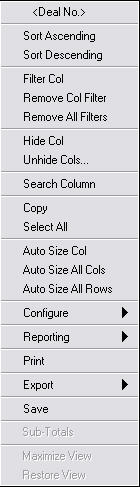
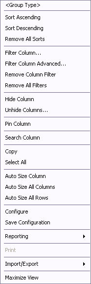

The Column Header Menu is available in almost all table and blotter windows in the system, such as the Table Viewer, Static Data windows, andso forth. This menu provides additional functionalities used to configure the table/blotter from which it is accessed.
As of V10.0r2, the menu may differ slightly, depending upon from which window it is launched.
This menu is accessed from various system tables/blotters. For illustration purposes, the following is an example of how it is accessed:
1. Start the Trading Manager.
2. Select Misc à Registered Pricing Models. The Registered Pricing Models display. This window is an example of a Table Viewer.
3. Right-click on any column heading of the table.
The following menu displays:

This menu is accessed from various system grid type windows. For illustration purposes, the following is an example of how it is accessed:
1. Launch OpenLink Desktop.
2. Select Reference Explorer desktop.
3. Click the Party Group folder.
4. Right-click on any column heading of the table.
The following menu displays:

NOTE: In both versions, the title that displays on the menu is the title of the column from which it was accessed.
Depending upon the window from which the menu is launched, the following items may be available:
|
Item |
Description |
|
Sort Ascending |
Sorts the data in the table using the selected column as the sort key, in ascending order. Alternatively, double-clicking the heading of a column sorts the data in descending order using the column as the primary sort key. Double-clicking it again sorts it in descending order. |
|
Sort Descending |
Sorts the data in the table using the selected column as the sort key, in descending order. Alternatively, double-clicking the heading of a column sorts the data in ascending order using the column as the primary sort key. Double-clicking it again sorts it in descending order. |
|
Remove All Sorts |
Clears all the data sorts that had been applied. The data displays in the same way as when the table was originally loaded. Only available in Menu Type 2. |
|
Filter Col |
Allows users to display only rows that match the selected values. 1 or more values may be selected as filtering criteria. Note: There is a limit to how many unique items can be in the table for the filter to work. If the filter has too many values, the error message “Unable to filter column. Distinct values exceeds maximum” displays. |
|
Filter Column Advanced |
Displays the Filter Column window. This window provides data filtration functionality that is more advanced than that provided in the “Filter Col” menu item. Only available in Menu Type 2. |
|
Remove Col Filter |
Removes filtering for the selected column. |
|
Remove All Filters |
Removes all filters that had been applied to the data. |
|
Hide Col |
Hides the selected column. |
|
Unhide Cols… |
Displays all hidden columns. |
|
Pin Column |
Locks the selected column in place within the table. The unpinned columns continue to scroll. Only available in Menu Type 2. |
|
Search Column |
Displays the Search window. This window provides the functionality to seek the selected string within the column. |
|
Copy |
Copies the selected row to the paste buffer. |
|
Paste |
Places a copy of the selected row in the desired location on the table. Only available in Menu Type 2. |
|
Select All |
Selects all rows on the table. |
|
Auto Size Col |
Adjusts the width of the selected column to fit the data. |
|
Auto Size All Cols |
Adjusts the width of all columns to fit the data. |
|
Auto Size All Rows |
Adjusts the height of all rows to fit the data. |
|
Configure |
Selecting this menu item will display the Configure window. This window provides the functionality to configure all aspects of the selected table. Only available in Menu Type 2. |
|
Configure à Quick Configure |
Switches the table into Quick Configure mode. While in this mode, users can drag columns, remove columns, and set up groups, tree views, filters, and pivots. Only available in Menu Type 1. |
|
Configure à Full Configure |
Opens the Configure View window. This allows the user to customize the table. Only available in Menu Type 1. |
|
Configure à Formulas à Edit Formula |
Opens the Add Formula Column window. This allows the user to edit the selected formula column. Only available in Menu Type 1. |
|
Configure à Formulas à Add Formula Column |
Opens the Add Formula Column window. This allows the user to create or add a formula column to the table. Only available in Menu Type 1. |
|
Configure à Formulas à Delete Formula Column |
Deletes the highlighted formula column. Only available in Menu Type 1. |
|
Configure à Formulas à Recalc Col Formula |
Recalculates the selected formula column. Only available in Menu Type 1. |
|
Configure à Formulas à Recalc All Formulas |
Recalculates all formula columns. Only available in Menu Type 1. |
|
Save Configuration |
Stores the configuration to the database. Only available in Menu Type 2. |
|
Reporting à AVS à Run Script |
Opens the Run AVS Script window. This allows the user to select the AVS script to run and the columns (i.e., fields) that will be passed as arguments to the selected script. |
|
Reporting à AVS à Run Task |
Opens the Run AVS Script window. This allows the user to select the AVS task to run and the columns that will be passed as arguments to the script that will be run by the task. |
|
Reporting à Crystal à Crystal Active Data |
Sends the contents of the table to the selected crystal report template. This option displays a file browser allowing the user to select the template of the crystal report that will be generated. |
|
Reporting à Crystal à Export To Ttx |
Exports a file containing the format of the table for the use of Crystal Reports. |
|
Reporting à Publish |
Collects the table data and sends it across Tibco Rendezvous. This functionality is provided for connectivity to 3rd party systems that can also communicate with Tibco Rendezvous. Customers can create a report “listener” that can subscribe to the Tibco Message and receive the data once “published.” |
|
Reporting à Pivot Table |
Opens the Pivot Table Setup window. This allows the user to create a pivot table. |
|
Reporting à MS Excel |
Opens the Excel Interface window. This allows the user to export data displayed in the table to a new, open, or existing Excel workbook. Note: This requires that Excel be installed locally on the user’s machine. This functionality looks at values in the user’s local registry. If Excel is not installed locally, this will not work. This will not work if Excel is installed only across a network. |
|
Reporting à Graph |
Opens the Blotter Graph window. This allows the user to organize table data and generate a graph of that data. |
|
|
Prints the current window. |
|
Export à Export to Text File (Menu Type 1) Import/Export à Export to Text File (Menu Type 2) |
Exports the contents of the table to a file in comma-separated format.
NOTE: In V9.1r1 and below, Menu Type 1 was named Import/Export and included an option to “Import Text File.” |
|
Export à Export to XML File (Menu Type 1) Import/Export à Export to XML File (Menu Type 2) |
Exports the contents of the table to a file in XML format.
NOTE: In V9.1r1 and below, Menu Type 1 was named Import/Export and included an option to “Import Text File.” |
|
Save |
Stores the current table configuration to the database. Only available in Menu Type 1. |
|
Sub-Totals |
This is non-functional. Only available in Menu Type 1. |
|
Maximize View |
Expands the selected table to fully occupy the window from which it originates. |
|
Restore View |
This selection is active only when a table has been expanded to occupy the window. Select this menu item to return the table to its original size and location within the window. |